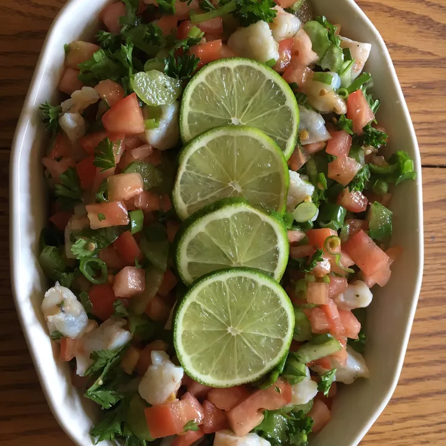

Ceviche Recipe

Ingredients
- 1 pound bay scallops
- 8 limes, juiced
- 2 tomatoes, diced
- 5 green onions, minced
- 2 stalks celery, sliced
- 1/2 green bell pepper, minced
- 1/2 cup chopped fresh parsley
- freshly ground black pepper
- 1 1/2 tablespoons olive oil
- 1/8 cup chopped fresh cilantro
Directions
Step 1
- Rinse scallops and place in a medium sized bowl. Pour lime juice over the scallops. The scallops should be completely immersed in the lime juice. Chill the lime juice and scallops all day or overnight until scallops are opaque (you cannot see through them).
Step 2
- Empty 1/2 of the lime juice from the bowl. Add tomatoes, green onions, celery, green bell pepper, parsley, black pepper, olive oil, and cilantro to the scallop mixture. Stir gently. Serve this dish in fancy glasses with a slice of lime hanging over the rim for effect.